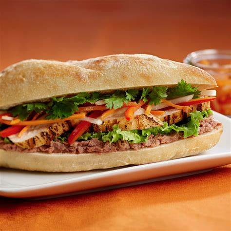
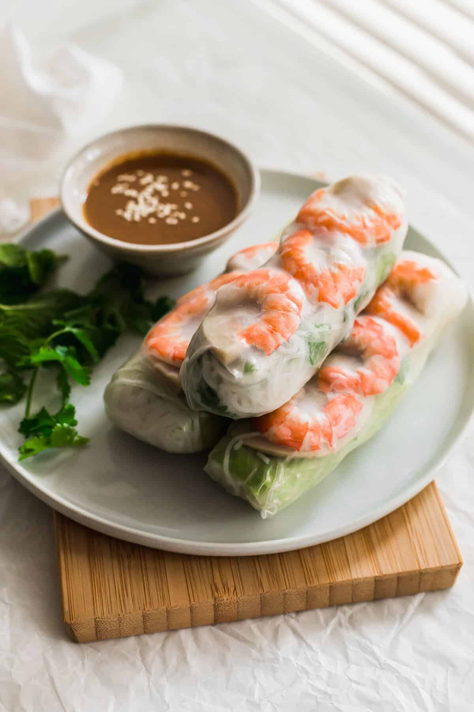
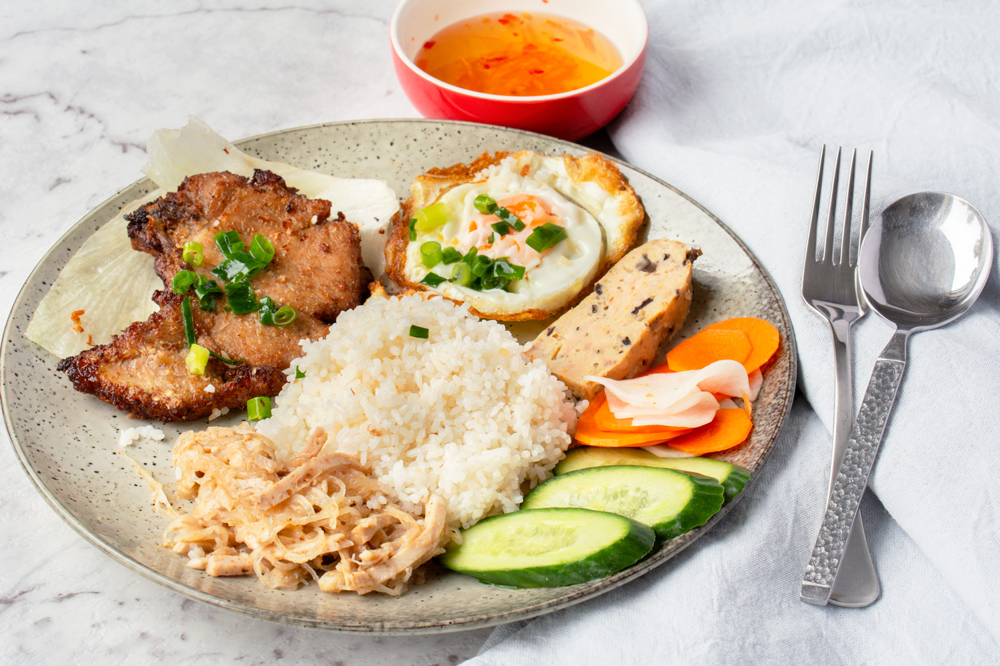
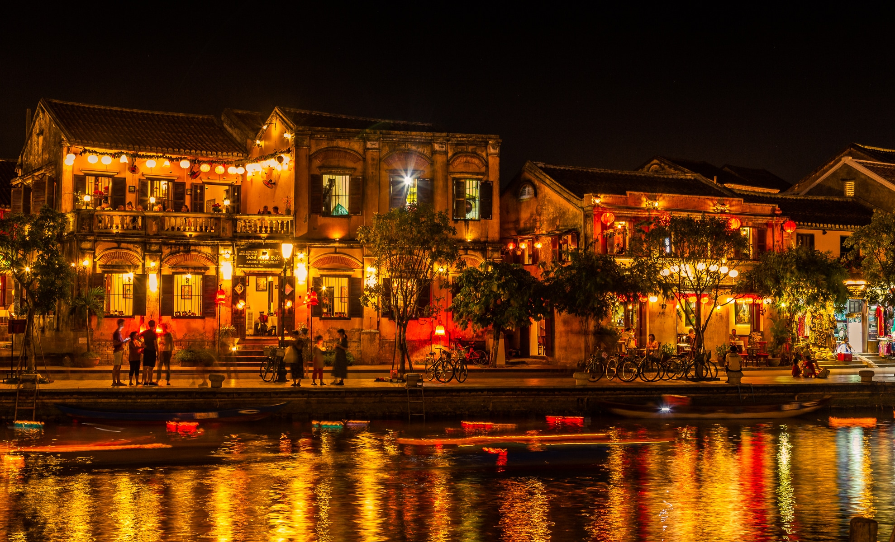

About Vietnam
Vietnam is a Southeast Asian country known for its rich culture, stunning landscapes, and delicious cuisine. From the bustling streets of Hanoi and Ho Chi Minh City to the serene beauty of Halong Bay and the Mekong Delta, Vietnam offers a wide range of experiences for travelers.
Traditional Vietnamese Cuisine
Vietnam is famous for its delicious and diverse food. Below are some of the must-try dishes:
| Dish | Description | Image |
|---|---|---|
| Pho | A famous Vietnamese noodle soup consisting of broth, rice noodles, herbs, and meat, usually beef or chicken. |  |
| Banh Mi | A Vietnamese sandwich that consists of a French baguette filled with meats, vegetables, and condiments. |  |
| Goi Cuon (Spring Rolls) | Fresh Vietnamese spring rolls made with shrimp, herbs, rice noodles, and lettuce, wrapped in rice paper. |  |
| Com Tam | Broken rice served with grilled pork (often with pork chop), but can be served with other types of meat. |  |
Famous places
- Ha Long Bay: A UNESCO World Heritage site known for its emerald waters and thousands of towering limestone islands.
- Hoi An Ancient Town: A well-preserved Southeast Asian trading port dating from the 15th to the 19th century, famous for its historic architecture.
- Hue Imperial City: The former capital of Vietnam, home to the ancient Imperial Palace and many historical sites.

We invite you to experience the warmth of Vietnamese hospitality and the vibrancy of our culture. Vietnam awaits you!